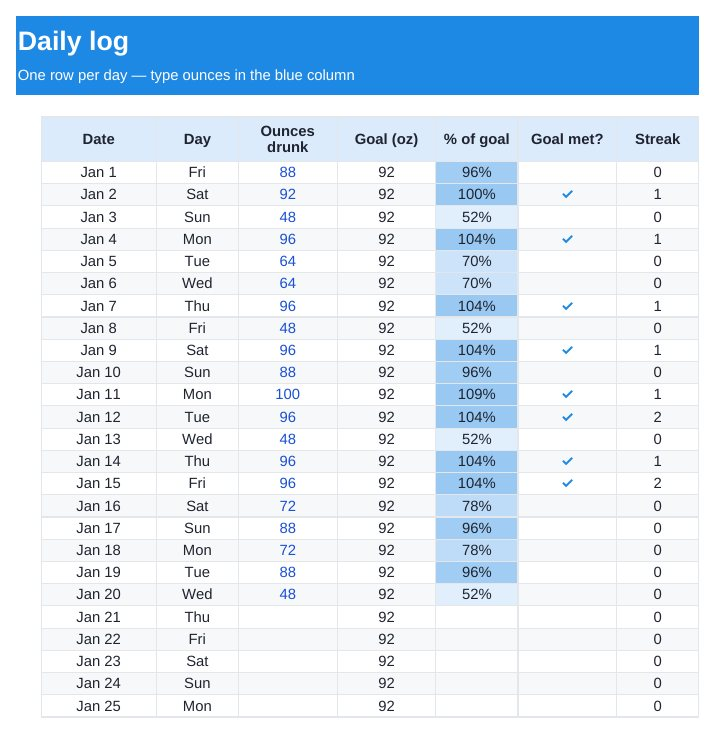

Home › Free Downloads › Excel
Free Excel downloadDaily Water Intake Tracker 2027
A free Excel water tracker that works out your daily goal, colours each day, counts your streak and charts every month for you.
⬇ Download the Excel file .xlsx · free · no sign-upWorks in Microsoft Excel, Google Sheets (File → Import) and Apple Numbers.

What’s inside
- Goal calculator from body weight and exercise minutes
- 365-day log for 2027 with % of goal and a ✓ for each goal day
- Current streak and best streak, worked out automatically
- Monthly averages with a bar chart
How to use it
- Type your weight and usual exercise minutes on the Settings tab.
- Each day, type the ounces you drank in the blue column.
- Check the Monthly tab for your averages and streaks.

Dropkin logs water in one tap from the bottle you already carry, in ounces or liters. No account, works offline.
Get it free on the App StoreQuestions
How much water should I drink a day?
The tracker uses a common rule of thumb: half your body weight (lb) in ounces, plus about 12 oz for every 30 minutes of exercise. It is a starting point, not medical advice. If you have a condition that limits fluids, follow your doctor.
Can I use it in Google Sheets?
Yes. In Google Sheets choose File → Import → Upload and pick the file. Formulas, colours and the chart come across.
Does it work in liters?
The template is set up in ounces. One liter is about 33.8 oz, so you can convert, or use the free app, which works in either unit.